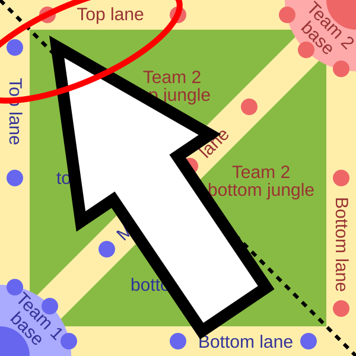

Welcome to my guide on how to play Top Lane in League of Legends! League of Legends is probably one of the most difficult games to learn and this guide will cover some basics on how to play the top lane role.

Top lane is at the very top side of the map, it is a lane usually played by bruisers or tanks classes. Most of the player base refers to this lane as an "island" because most of the action goes on towards the bottom and middle of the map. That does not mean the lane isn't important, but it does play out differently compared to the other lanes. This guide will explain some of the very basics of how to play the lane.
Farming in League of Legends means to deal the final blow to the enemy troops that spawn in, known as minions or creeps. Dealing the final blow is known as "last hitting" and it is very important because it grants you gold and experience. It is one of the many foundations of the game. Collecting gold allows you to buy items which grant stats (armor, magic resistance, health, etc). Experience levels up your character during the game which can let you learn new abilities and make them stronger.
The enemy minions arrive in waves every 30 seconds. The wave contains 3 melee and 3 caster minions. The melee minions will hit whatever is in front of them while the caster minions are behind and attack from afar. Every 3 waves the cannon minion spawns in with the rest of the wave. The cannon minion is a minion riding a cannon that when defeated drops more gold and experience than normal minions. Cannons are very important to last hit since they are more valuable and rare.
Sitting in top lane and hitting the minions before they die is the goal of farming. It doesn't sound too bad right? That would be true if it was not for the enemy top laner. The enemy top laner also wants to farm your minions (each team has minions spawn in). The enemy will often harass you with their attacks and abilities with the goal to make farming minions harder for you. There are ways around this, some characters have spells or a long attack range to safely hit the minions while avoiding the enemy. It is really depends on the top lane match up (which character you pick vs what the enemy picked), which I will cover in the next section more in depth.
Great, so we know that we need to farm and that an enemy top laner will try to stop us from doing that. But this is where we fight back or "trade". League of Legends is a turn based game in the big picture. Each top laner has a "turn" to farm the wave, hit the enemy tower (a tower is a structure that shoots at the enemy if they get too close), etc. At the start of the game the minions take an equal amount of time to arrive to top lane, so they meet in the middle of the lane. But eventually maybe the enemy leaves the lane to buy items and you manage to last hit every minion and shove it into their tower. The wave will now "bounce" meaning the enemy wave will arrive to your minion wave faster than your wave arrives since they have to travel farther. Because the enemy wave arrives sooner they can hit your wave killing your minions and building up a bigger wave on their side. Since they have a bigger wave it will eventually build up to a point where it can kill your wave and "crash" or arrive at your tower.
When is the best time to trade you may be wondering? It is when it is your "turn" meaning you have the larger minion wave. It is advantageous to fight the enemy when your wave is bigger because the minion damage adds up. If you manage to kill the enemy top laner and push your wave into their tower the tower will kill the minions meaning the enemy top laner will lose gold and experience, which is very brutal. While your wave is under the enemy tower you can recall (teleport back to base) and use your gold to buy items and get an advantage on your enemy. This is basically how the entirety of the first 15ish minutes of the game will go.
How exactly do you trade? It boils down to auto attacking (melee hitting) and using your abilities (spells) to do damage to the enemy top laner. For example if you are playing Garen a trade could be using your Q ability (a big sword bonk) and E ability (spins like a tornado) to damage the enemy top laner making it more difficult for them to farm. You win the trade by doing more damage then the enemy does to you. You also can win the trade by equally trading damage but you last hitting more minions thus more gold and experience than the enemy.
League of Legends can be a very confusing game to learn. In my opinion it is in the top 3 most difficult games to learn. Below a form is available to fill out and submit that will save any questions or other notes you may have while learning how to play top lane. You can always revist this website and check back on your progress or check any notes you have added!